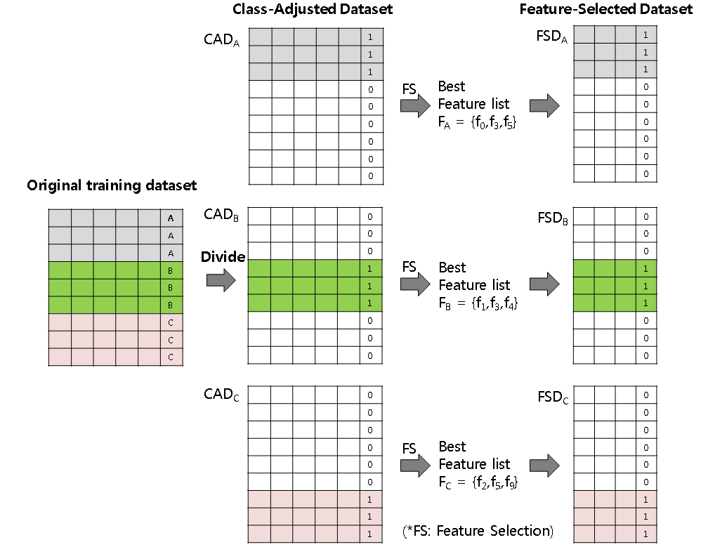
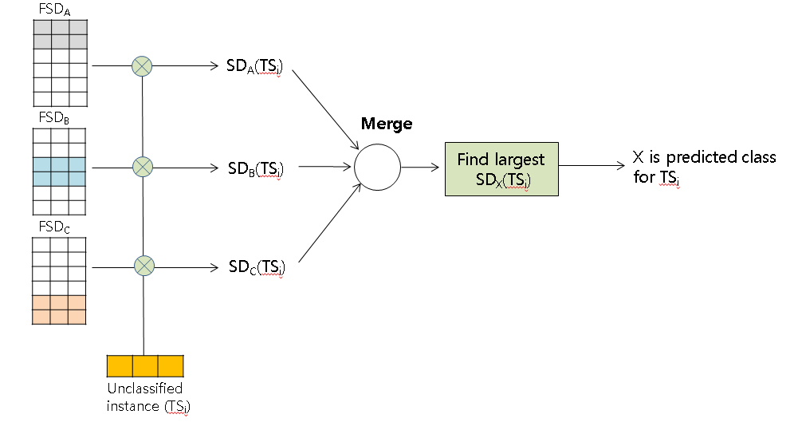
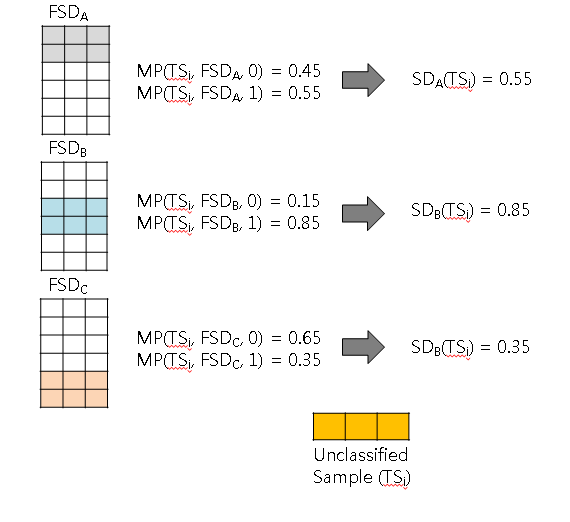

|
1. Introduction
DAMC-MC is a method contains both feature selection and classification scheme. It can be applied for any classification algorithm. The divide-and-merge technique is a technique which deals with problem in a way to separate the problem into multiple task and work on each separated problem.
Then merge solved separate problem to make a final decision.
2. Method
Steps of DAMC-MC classification:
- Prepare class-adjusted datasets from the original dataset(the left side of Figure 1 )
- Apply feature selection and make feature-selected datasets (the right side of Figure 1 )
- Calculate support degrees of each class using new datasets. (Figure 2 and 3 )
- Merge support degrees and decide the class of the unclassified instance.

Figure 1. Prepare class-adjusted datasets from the original dataset

Figure 2. Calculating support degree for each class and merge process

Figure 3. An example of calculating support degrees
3. Programs
Folder description:
- DamClassifiers.java
- FeatureRanking.java
- FeatureScoring.java
- kfoldTestDAMC.java
- kfoldTest.java
- parameter.txt - User defined txt File
- runDAMC.bat - executable Batch file
Note
- parameter.txt file contains user defined variables
Note: put the numbers after each colon in each line
line 1: NO_OF_FOLD: [number of fold]
line 2: NO_OF_REPEAT: [number of repeat for Kfold test]
line 3: CLASSIFIER: [KNN-1, KStar-2, SVM-3, NaiveBayes-4, LogisticRegression-5]
line 4: FEATURE_SELECTION: [Relief-1, GrainRatio-2, FS-SVM-3, FS-KNN-4]
line 3: SELECTED_FEATURE: [number of selected feature]
line 4: KNN: [number of nearest neighbors for KNN classification]
- runDAMC.bat file executable batch file
Format of Execution:
java kfoldTestDAMC [input data file]
- normal: Contains Normal classification and Feature selection methods
- Classifiers.java
- FeatureRanking.java
- FeatureScoring.java
- kfoldTestNormal.java
- parameter.txt - User defined txt File
- run.bat - executable Batch file
DAMC-MC and Normal methods use these packages. You should put them into C -> Program Files -> Java -> JRE -> lib -> ext.
- dataset: Contains 10 datasets: 5 Gene expression and 5 other biological data
Gene expression datasets: GDS1027, GDS2545, GDS2546, GDS2547, GDS3715
Other biological datasets: DLBCL, Lung, MLL, multi_tissues, SRBCT
Note
- Dataset should be .csv format.
- Only numerical vaule is allowed for dataset.
- First column of dataset should be class(category) data and shold have continuous value beginning with 0.(0,1,2,3,...)
4. Results of Classification test using Normal and DAMC-MC methods
The numbers 5, 10, 20, 30, and 40 in the tables denote the number of selected features for the test. The 'Normal' column means the normal feature selection method, which does not apply the DAMC approach.
*** Contact email: sejongoh @ dankook . ac . kr
|